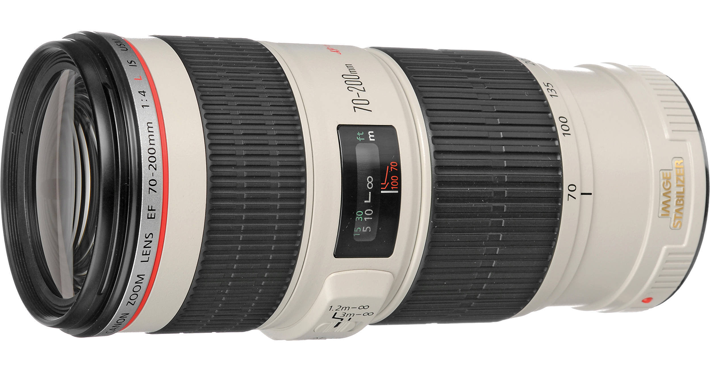
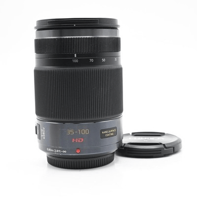
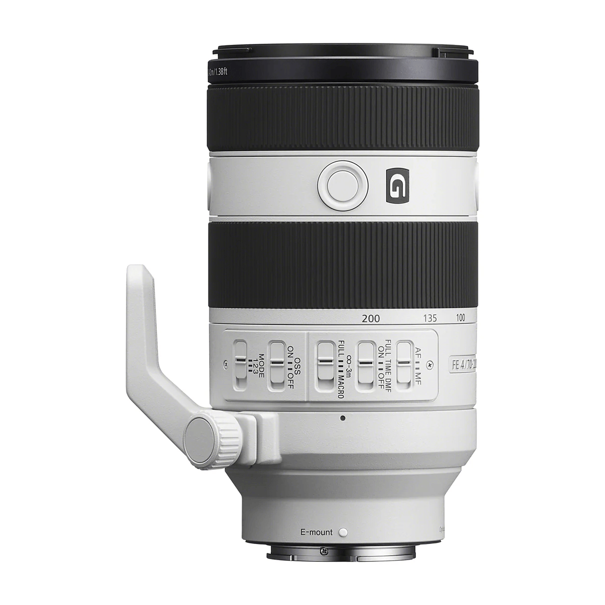
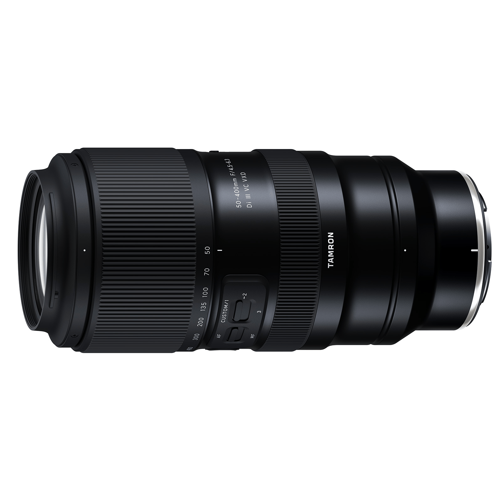
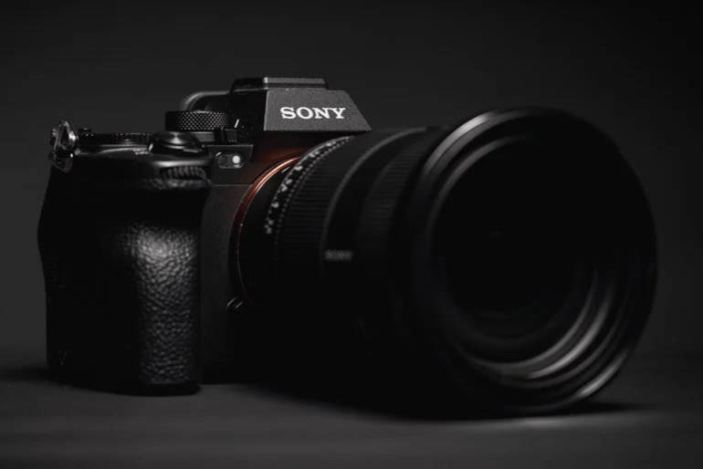
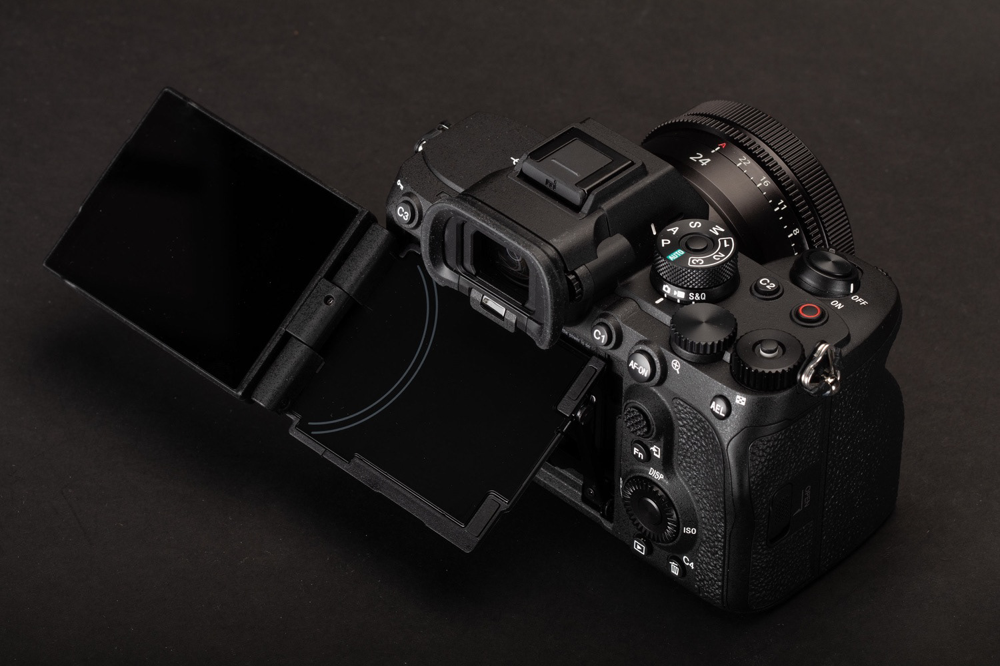

The Force of Habit
Back in 2006 I purchased one of the best lenses I ever owned, the mighty white and red line “L” glass Canon 70-200 f/4 L. The micro contrast, sharpness and sublime out of focus rendering was out of this world. But 200mm was quite limiting. Not enough reach, and 70mm wasn't wide enough either, so I mostly kept using the kit of that time for most of the shots.


Fast forward to micro 4/3 days, and I did the same. 12-40mm (24-80mm equivalent) and 35-100, so another 70-200mm in Full Frame terms. Soon I realized that, while the 35-100 rendered beautifully, the reach was not there, so I bought a 45-200mm (90-400mm) which did delivered what I was looking for. At least to certain extent.
Trips twice over the same stone
There is a Spanish saying that says “The man is the only animal who trips twice over the same stone"… well I did it three times.
When I moved to Sony Alpha, my cerebral muscle memory came into action immediately, and started looking for the same focal range. Fortunately instead of going to the same standard zoom of 24-70mm, I found out about the 20-70mm f/4, which was actually the lens that made me decide to make the switch, but to accompany it what did I chose? Well, obviously another 70-200 f/4, also white and beautiful. But this time I wasn't going to be left with not enough range, so paired it with a 1.4 X teleconverter, and I thought to myself: “I can have from 70mm up to 420mm if I count the TC plus APS-C mode", which is kind of silly if you think about it. APS-C mode is simply cropping the Full Frame image, which I can do in post, and in fact is recommended to do it and not waste the rest of the frame.
When I realized that the 70-200mm wasn't enough reach, and the TC was living attached to it all the time, I thought: “What am I doing? I'm sitting over a good amount of money that I can use for something else, and get a replacement that can serve me, cost less than half, and still provide the quality and reach I'm looking for”.


That was not a thought coming out of nowhere, I did my due diligence and researched about the Tamron line of super zooms. The first one that called my attention was the 50-400mm f/4.5-6.3, but that is a big and heavy gun. Then a friend from DPReview.com suggested the 50-300mm f/4.5-6.3 instead, and checking the size at camerasize.com I realized that it was quite smaller, almost half the weight, and also half the price. “That's the one", I thought.
So after careful consideration, and asking for advice on the forum I decided to sell both the Sony 70-200mm and 1.4X teleconverter, then added the rest of my micro 4/3s gear, which I foolishly though I wanted to hold on to it “just in case", which never was going to be. The whole package gave me enough purchasing power to get the Tamron 50-300mm and the rest of the money was used to upgrade my camera body to the one I've been looking for since I got the A7R IV.
An almost perfect machine
The Sony A7R IV is no incapable camera. Is an amazing tool with an impressive performance and image quality. Although it shows its age when it comes to speed, responsiveness and the use of more modern technologies. Years ahead of anything I've used before for sure, but not there yet with the current affairs in the latest and greatest.
And I'm not one who likes to jump to a new piece of gear the moment is released, mainly because I like other people to test it before, and secondly because prices are generally higher upon release. But the A7R V, the next upgrade, and latest model of the A7R line, is different. It's been out since late 2022, so already has 3 years of real world testing, used by most of the top photographers that I follow, and it also hasn't lost most of its price from release, meaning that still holds a great value.


Reaching out for it was not an easy task. Thanks to the gear I sold and the lower price of the Tamron, I was able to get it, but I had to use my photography savings. Thankfully once I sold the A7R IV, I replenished some of the savings.
This camera is MASSIVE. And I strongly suggest you to get the Gary Friedman A7R V guide, either the printed book or PDF. I went with the PDF version as it also includes a Kindle version for the same price, so I can read it in my computer, tablet, or kindle, which is quite convenient. I suggest a tablet or computer, as it has a lot of color photos and uses the same color coding of the menus to differentiate separate sections. You can find it in https://www.friedmanarchives.com/a7rv (Not affiliate or sponsored)
So what the A7R V has that the IV doesn't? This is my own personal list of things I have found so far:
Mark IV vs Mark V
- Dials and buttons feel softer and more responsive.
- Especially the exposure compensation dial to the point that I can move it with my thumb like the regular rear dial. On the A7R IV it was kind of hard to move with the thumb with precision, either was hard to move, or once I exerted enough force, it’ll jump several clicks which was quite frustrating.
- The main dial is simpler, just PASM, 3 custom and Auto. Photo, Movie and S&Q are in the inner mode dial that changes the camera behavior completely.
- Focus bracketing is the one single feature worth upgrading. At least for me.
- So is the screen, which not only folds and flips around, but is much crisper. It also allows to be completely folded against the body, protecting it for traveling.
- The movie record button is now a custom button. It shows as Movie button in settings, but you can assign anything to it.
- The Exposure Compensation dial is now a 4th dial. It has no markings, and it shows like L rear dial and R rear dial in the settings.
- The menu is so much easier and faster to navigate. It has the same 3 levels of segregation, but instead of being sequential, is now spread across the screen so you can preview each option and sub-option. Difficult to explain than to show. Trust me, once you experience it, don’t want to go back.
- The touchscreen is now usable for everything, including navigating the menu.
- The EVF is in another level completely. Is so high resolution (9.4MP) that I can zoom out the image for those who wear glasses and see the full screen.
- I'm using CFExpress cards, which means no wait for buffer to clear. It simply finishes saving a long burst in a couple of seconds. Especially faster when transferring files to the computer.
- The SD/CFE cover has now a slider lock, and once you slide it, it is easier to open. It won’t open accidentally, and to me, it is a better design over the A7R IV. More than once, struggling to get the camera out of my cramped sling, I ended up opening the card cover. This is not happening with this new design.
- The camera is ready to shoot after turning it on in less than a second. The A7R IV took easily 2-3 seconds, which can easily mean missing a critical shot. I used to leave it on in case I needed to shoot fast, but not with the A7R V. It just springs back to life ready to roll.
- In general, the camera is faster and snappier in every respect.
- AI AF is sorcery. I believe there is more advance AF system in existence right now.
- IBIS feels like I’m back to my m43 days.
- Closing the shutter when changing lenses is a very nice feature, although every time you turn off and on the camera, it'll consume two full shutter actuations so you might want to take that into account and maybe enable it when changing lenses only, and in dusty or windy conditions. I have it on My-menu, so I can easily reach for it when needed.
- I do panos very frequently, especially since I prefer that to switching to a wider lens. I’m also using focus bracketing quite extensively as well, and it has become a real annoyance identifying when a bracket ends and the next starts. Especially when shooting one after the other. Switching the drive mode to single frame to take a frame of the floor is an unneeded inconvenience, having to turn it back to continue focus bracketing. Now I assigned C3 to “Marker frame”. It creates a simple blank frame with a big grey arrow. No shutter actuation.
- Photos can be geotagged automatically when paired to my smartphone. It also updates date and time if the time zones changes.
- Bulb timer for up to 999 seconds.